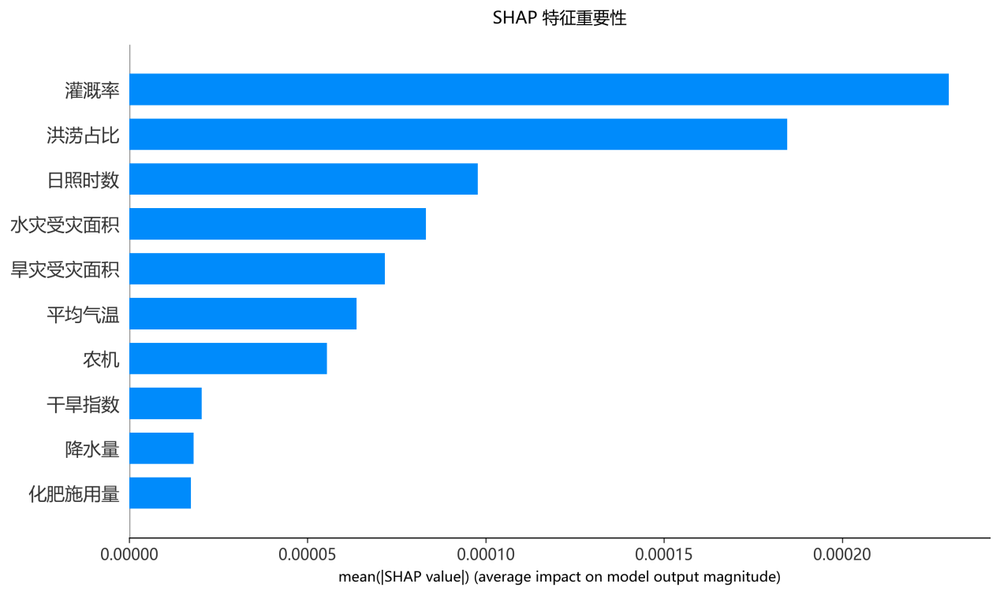
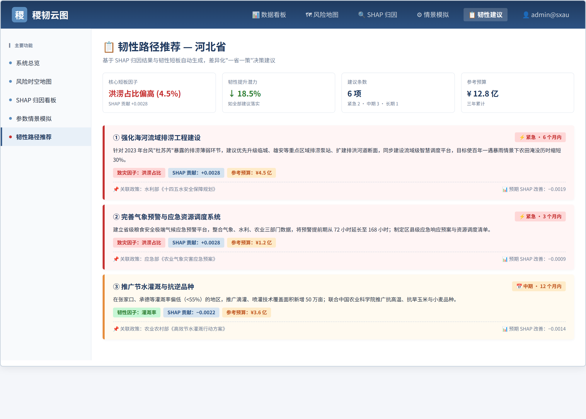

农技规程、病虫情报与地方技术意见分散在不同机构与渠道，基层获取完整信息的成本很高。
权威条文很少结合本地气象、土壤状况和当季生产进度，通用建议难以直接采用。
现有农业问答多停留在概念解释，给不出明确的时间节点、用量与操作步骤。
| 赛题考核项 | 我们的设计目标 | 实现方式 |
|---|---|---|
| 回答专业性 | 每条建议都有可核查的依据 | 农技知识库检索增强生成，逐条标注依据类型与出处 |
| 方案可操作性 | 落到时间、对象、用量与注意事项 | 结构化方案模板，结合生育期日历与投入品登记信息 |
| 交互自然流畅度 | 支持口语化多轮问答，缺失信息主动追问 | 槽位补全策略，流式输出，结构化卡片 |
| 知识检索准确性 | 检索结果可评测、可追溯、可随知识更新 | 稠密与关键词混合检索，交叉编码重排，元数据与时效过滤 |
| 工具 | 作用 | 状态 |
|---|---|---|
| 区域风险查询 | 按省份与年份返回风险等级与区域排序 | 已实装 |
| 因子归因解释 | 返回各因子对风险的贡献度与作用方向 | 已实装 |
| 参数情景模拟 | 调整灌溉、化肥与降水参数后的反事实推演 | 已实装 |
| 韧性路径推荐 | 按短板因子输出分阶段措施与优先级 | 已实装 |
| 知识检索 | 从农技知识库召回条文并给出出处 | 已实装 |
| 图谱关系检索 | 按实体展开多跳关系与社区摘要 | 已实装 |
| 水肥处方计算 | 按作物与生育期给出分次用量与施用方式 | 本期建设 |
| 病虫害诊断 | 由症状或照片给出疑似对象与防治适期 | 本期建设 |
| 气象与物候查询 | 返回预报要素、积温与生育期推断 | 本期建设 |
知识条目带作物、区域、生育期、来源机构与发布日期五类元数据，先过滤后排序；超过有效期的技术意见自动降权；检索内容不足时明确说明未收录，不生成结论。
节点覆盖作物、生育期、气候胁迫、病虫害、农事措施、投入品、区域与标准规程八类。
综述型提问走社区摘要，具体实体提问沿关系路径多跳推理，条文查找直接返回相关片段。

| 验证协议 | 结果 |
|---|---|
| 随机划分 8:2 | R² = 0.907 ± 0.038 |
| 留一年验证 | R² = 0.894 |
| 留一省验证 | 中位 R² = −16.83 |
| 县域留一县验证 | R² = 0.660 |
省级截面样本不支持跨省外推，平台据此只提供区域内相对风险与情景推演，不承诺产量绝对值的预测。
横截面归因与时序注意力两条路线的因子排序并不完全重合，平台将其作为互补证据交叉印证方向性结论。
| 产出类型 | 必要输入 | 结构 | 依据来源 |
|---|---|---|---|
| 农事管理方案 | 作物、区域、生育期、地块条件 | 生育期任务清单、时间节点、操作要点、风险提示 | 技术规程，区域风险归因 |
| 病虫害防治建议 | 作物、症状或照片、发生时期 | 疑似对象、诊断依据、防治适期、农业与化学防治措施 | 病虫情报，图谱关系，登记信息 |
| 水肥调控处方 | 作物、生育期、土壤条件、已施用量 | 分次用量、施用时间、施用方式、注意事项 | 测土配方资料，技术规程 |
| 生产规划报告 | 区域、规模、品种与目标 | 风险画像、品种与农时建议、投入安排、应对措施 | 区域风险归因，情景模拟，韧性路径 |
| 数据集 | 规模 | 主要内容 |
|---|---|---|
| 省级多模态面板 | 31 省 × 13 年，403 条样本 × 11 维特征 | 气象、致灾统计、遥感植被与地表温度、灌溉化肥机械 |
| 城市级生产面板 | 10 个主产省 × 148 个地级市 × 13 年 | 市级产量、气象、耕地比例与生产条件 |
| 县级建模面板 | 1 041 县 × 11 年，10 407 条记录 × 14 特征 | 县域气象、遥感与生产投入，用于留一县验证 |
| 县级社会经济面板 | 2 725 县 × 23 年，62 676 条记录 × 82 字段 | 播种面积、耕地面积、粮食产量、机械动力、县级经纬度 |
| 空间与遥感数据 | 全国省、市、县行政边界，省级月度植被与地表温度 | 栅格聚合与空间匹配的基础数据 |

| 指标 | 定义 | 验收标准 |
|---|---|---|
| 检索命中率 | 标准依据出现在召回片段中的题目占比 | 不低于 85% |
| 引用正确率 | 答案标注出处与实际使用片段一致的题目占比 | 不低于 95% |
| 方案可操作性 | 农学背景评审按五分制打分，考察时间、用量与操作要点 | 平均不低于 4.0 |
| 无依据输出率 | 出现无法回溯到检索内容或模型输出的结论的题目占比 | 不高于 2% |
| 边界拒答正确率 | 超出知识范围或模型边界时正确说明的题目占比 | 不低于 90% |
| 响应时延 | 从提交问题到返回完整方案的时间 | 秒级完成 |
省级样本的留一省验证中位 R² 为 −16.83，平台只输出区域内相对风险与情景推演。
剂量只引用登记信息，同时给出安全间隔期与防护要求，并提示以当地植保机构意见为准。
每条知识登记发布日期，超期内容在排序中降权，答案中显示依据的发布时间。
所有数据与知识条目登记来源与授权信息，内部研发文档不进入对外知识库。
口语提问即可获得措施、时间与用量，降低获取与理解成本。
据此安排培训与现场指导的重点，把人力投向风险集中的环节。
风险空间分布与情景模拟结果支撑防灾资源投放次序的讨论。